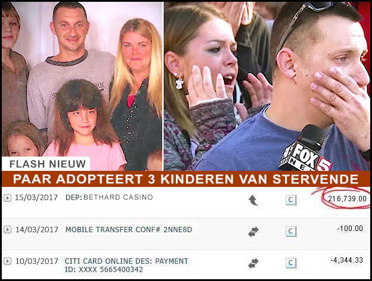
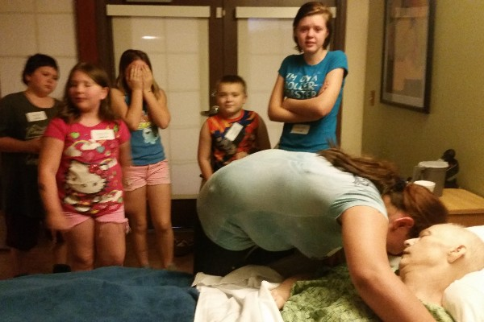
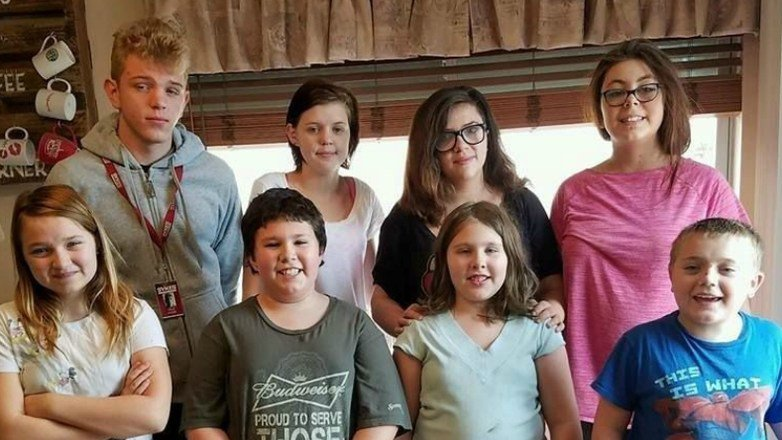
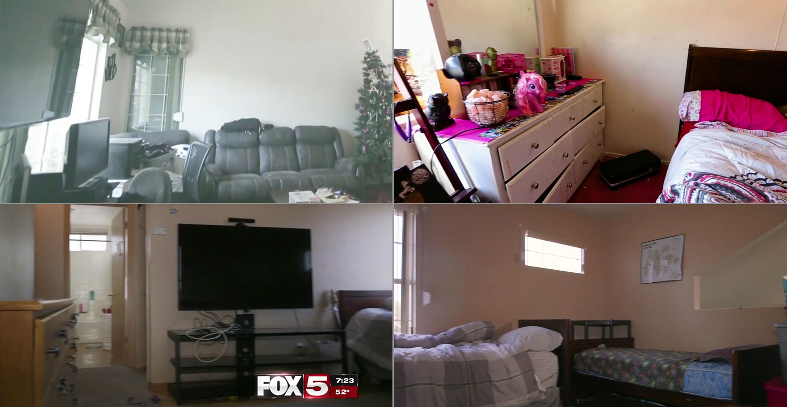

Paar neemt 3 kinderen van stervende vrienden in huis. De schokkende nasleep is onvoorstelbaar
Published on
Den Haag – Het gezin had al vijf eigen kinderen, maar ze konden het niet over hun hart krijgen om hun buur en goede vriendin af te wijzen toen ze hen vroeg om de wettelijke voogden van haar kinderen te worden als ze haar gevecht tegen kanker zou verliezen.
Ellen, een moeder van vijf, was een bingo-kassier uit Den Haag die vaak ’s nachts moest werken. Hilde, een alleenstaande moeder van drie, was haar buur en een goede vriend van de familie. Hilde kampte al enige tijd met pijn en ongemakken in combinatie met misselijkheid en andere symptomen. Haar dokter beval een reeks testen aan waarvoor ze een korte tijd in het ziekenhuis moest verblijven. Ellen ging akkoord om dat weekend op de drie kinderen van Hilde te letten. Het werd een heel druk weekend voor Ellen in een goed gevuld huis met acht kinderen onder haar hoede. De kinderen konden het echter aardig met elkaar vinden en hadden veel plezier terwijl Ellen als een moeder was voor hen allemaal, er tegelijk voor zorgend dat Hildes kinderen werden gerustgesteld als ze zich zorgen maakten over hun moeder.
Hilde was dankbaar dat haar buur wilde babysitten. Ze had geen familie dichtbij en niemand anders kon de drie kinderen tegelijk in huis nemen. Het weekendje bracht de twee vrouwen en de kinderen dichter bij elkaar en de volgende dagen lachten ze nog veel met alle fratsen die de kinderen dat weekend hadden uitgehaald. Enkele dagen later kreeg Hilde het verschrikkelijke nieuws. Haar testresultaten kwamen terug en de diagnose was slokdarmkanker in het tweede stadium en maagkanker.
Onderschrift van afbeelding1: Hilde overleed sneller dan verwacht toen stadium 2 in geen tijd overging in stadium 4. Nu zijn ze een familie van 10.
Hilde begreep de ernst van de situatie toen ze het nieuws hoorde. Haar dagen waren geteld en ze moest de nodige regelingen treffen zodat er iemand voor haar kinderen zou zorgen eens ze er niet meer zou zijn. Ze hoopte iemand te vinden die ze alle drie in huis kon nemen, want de kinderen van elkaar scheiden zou een hartverscheurende optie zijn geweest.
Onderschrift van afbeelding2: Ellen en Joris hebben vijf eigen kinderen, maar gingen akkoord om de drie kinderen van Hilde te adopteren. Bovenste rij van links naar rechts: Tom, Ilse, Anna, Jade. Onderste rij van links naar rechts: Julie, Wout, Hannah, Thomas.
Ellen en Joris, haar man, bespraken enkele avonden lang hoe ze hun vriendin met al haar problemen konden helpen. Ze werkten allebei voltijds, hadden eigen kinderen op te voeden en hun huis, waar het al vrij druk was, was aan een opfrissingsbeurt toe. Uiteindelijk beslisten ze dat naastenliefde en menselijkheid op de eerste plaats komt: ze lieten Hilde weten dat als het onvermijdelijke zou gebeuren, ze de kinderen in huis zouden nemen en ze opvoeden als hun eigen kinderen. Ellen wist dat zij de grootste last zou dragen om voor de kinderen te zorgen, maar ze was bereid dat te doen, want zij was zelf opgegroeid als pleegkind. Ellen kende de problemen in de pleegzorg en wilde niet dat Hildes kinderen hetzelfde zouden meemaken.
Niet veel later overleed Hilde. Ellen en Joris namen zoals afgesproken de kinderen in huis. Hun huis was tot de nok toe gevuld met de acht kinderen. Ze hadden een oud huis dat aan een opfrissing toe was. Heel wat delen van het huis hadden hun beste tijd gehad en moesten grondig worden hersteld of zelfs worden vervangen. Hiervoor hadden ze het geld echter niet, vooral niet nu hun budget nog meer onder druk stond door de drie extra monden die ze te voeden hadden.
Terwijl Ellen op een dag aan het werk was, zag ze tijdens haar middagpauze, toen ze op zoek was naar recepten, toevallig een advertentie voor een online casinospel. Het spel bood tot maximaal 200% en 25 gratis spins draaibeurten om mensen te overtuigen het spel eens te proberen. Ze vond dat dit wel een poging waard was, aangezien ze toch niets te verliezen had. Tot haar eigen verbazing won ze €200.000. Ze wist meteen dat haar prioriteit een grondige renovatie van haar huis zou zijn.
Onderschrift van afbeelding3: Omdat hun huis al heel krap was met de 7 oorspronkelijke bewoners, moesten ze aparte bedden voor 3 bijkomende kinderen en een scheidingswand in de kamers voorzien om de kinderen te mogen adopteren.
Ellen bewaarde het geld veilig, en ze wilde een grote verrassing voor haar familie regelen. Ze zorgde ervoor dat ze een weekendje gingen doorbrengen bij hun grootouders en vertelde iedereen dat ze de tijd nodig had om wat huishoudelijke klusjes te doen. In het geheim maakte ze afspraken met een lokale aannemer om tijdens dat weekend het huis volledig te transformeren terwijl haar familie er niet was. Door geprefabriceerde materialen te gebruiken en een goede planning en off-site voorbereiding van de grote klus, kon de aannemer beloven dat de renovatie vlug zou zijn afgewerkt, gezien het krappe tijdschema voor het project.
Onderschrift van afbeelding4: Het verschil was ongelofelijk – en nam maar 24 uur in beslag.
De familie kon haar ogen niet geloven toen ze bij thuiskomst allen hun nieuwe huis zagen. Elk van de acht kinderen had nu een eigen kamer en er was meer dan voldoende plaats om rond te hollen. Niemand moest nog kamers delen of op de bank slapen. Na dat grondige renovatieproject had Ellen zelfs nog geld over om haar oudste kind naar een prestigieuze universiteit te sturen. Haar familie was helemaal overdonderd door hun grote geluk.
Onderschrift van afbeelding5: Dat ziet er nu een gelukkige familie uit!
Ellen was een van de grote winnaars van de draaibeurten-weggeefactie van het online game, maar ze was niet de enige die voordeel haalde uit deze promotie. Uit betrouwbare bron vernamen we dat er meer dan 1.800 spelers wereldwijd een cash bedrag hebben gewonnen met dit online casino-evenement. De weggeefactie is al zo succesvol geweest dat er geruchten gaan dat het bedrijf deze promotie binnenkort zal stopzetten. In de voorbije maand hebben ze cash-prijzen uitgereikt voor een bedrag van €2.223.896. Nieuwsreporter Tanja deed ook een poging toen de promotie nog liep. Ze ging naar huis met €27,18. Jammer genoeg kan niet iedereen een grote winnaar zijn zoals Ellen.
Denk je dat dit ook je geluksdag is? Registreer je bij Bethard Casino om welkomstbonus en tot maximaal 200% en 25 gratis spins te ontvangen! Wees snel, want de voorraad is beperkt en de promotie zal eindigen op
Klik HIER om tot maximaal 200% en 25 gratis spins te claimen!
Tip: Stort € 10 en ontvang een ongelooflijke bonus!

Wie weet win ik en kan ik eindelijk ontslag nemen, LOL, grapje hoor. Heeft iemand dit al geprobeerd?
Als je het haat, blijf je maar haten. Maar als je een dromer bent die weet dat alles mogelijk is als je over de juiste instelling beschikt...is dit iets voor jou.